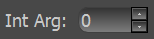
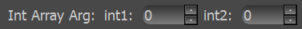
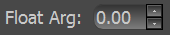
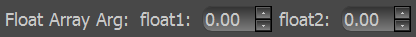
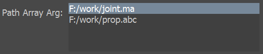

每种参数组件类对应一种默认参数的数据类型。
如果默认参数的数据类型没有相应组件，则无法生成界面。
Bool，BoolArray，Int，IntArray，Float，FloatArray， String均直接通过数据类型判断对应组件。
导入QFn时会向__builtin__添加的内建类型enum，以enum作为参数默认值会对应Enum组件。
使用正则表达式[A-Z]:([\\/][^\\/:*?"<>|]+)*$匹配成功的字符串会对应Path组件。
PathArray的使用方式是将需要的文件拖入组件内。
| 类名 | 数据类型 | 样式 | |
| Bool | bool | ||
| BoolArray | tuple(bool, bool……) | ||
| Int | int |  | |
| IntArray | tuple(int, int……） |  | |
| Float | float |  | |
| FloatArray | tuple（float, float……） |  | |
| String | str/unicode | ||
| Enum | enum/int/str/unicode | ||
| Path | str/unicode | ||
| PathArray | list[str/unicode, str/unicode……] |  |